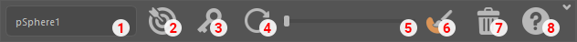

Sculpt Anim¶
This tool allow you to sculpt any skinned mesh on one or multiple frame.
Launch in maya¶
If you have created a shelf when installing the tools you just have to press this icon
If not you can run this code in Maya script editor
import Sculpt_anim.ui as sculpt_anim
try:
UI.main_ui.deleteLater()
UI.main_ui_quit()
except (RuntimeError, TypeError, NameError):
pass
except Exception as e:
cmds.warning(e)
sculpt_anim_UI = sculpt_anim.SculptAnimUI()
sculpt_anim_UI.main_ui.show()
Interface¶
Note
If no mesh were selected most of the interface will be disable please use the select mesh button (cf 2.) to enable them
- Current mesh
This box will display the current mesh selected. It’s on this mesh that the edit will be performed.
- Select mesh
This button will be use to change the current mesh based on what you have selected when pressing it.
- Key
- If you press this button it will create a new target on the current frame.It’ll also light in
redif there’s already a key on the current frame.
- Reset mesh
This button will reset the mesh to it’s default state.
- Tweener
- The handle will move accordingly to your positioning between two targetsYou can move the handle to be more close from the previous or next targetReleasing the handle will set a new key
- Edit mode
- This will enable the edit mode, you have to activate it in order to edit the meshIt will light in
yellowwhen you are in edit modeIf there is no key when you toggle the edit mode a key will be set
- Delete Target
This will delete the current target you can right click the button to delete all target
- Help
Open the documentation inside maya and press the select mesh button
Workflow¶
Initialize tool¶
Load the tool in maya
See also
- Select the mesh you want to edit and press the select mesh button,
this will enable all the tools
Warning
Edit Mesh¶
Go to a frame where you want to edit your mesh and press the edit mode button This will allow you to start sculpting your mesh
Once your done editing this frame moving in the timeline will automatically bake the target
Note
If you want to leave the edit mode without changing the current frame you can also press the edit mode button again
You can edit the mesh with all the classic mesh edit maya tool. This tool also come with his own marking menu that you can summon 👻 by pressing the mouse middle click button
At any moment you can reset the mesh to it’s default deformation by using the reset button
Note
This will only reset the deformation performed by the sculpt anim tool
Tweener¶
- You can use the tweener between two frames it will favor on or the other.Releasing the handle will set a key
Warning
this action in undoable